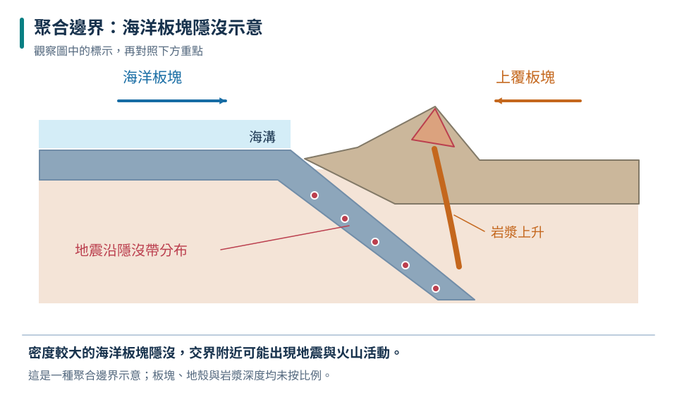
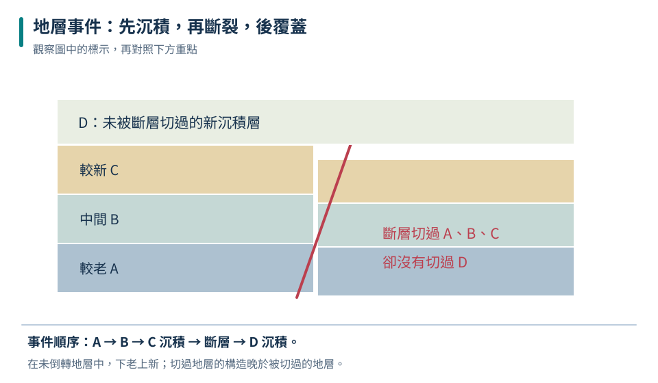

組成與力學分類
地殼／地函／地核是組成分類；岩石圈則強調剛硬、能形成板塊的區域。
九上 · 地科 · 第 6 章
我們挖不到地心，卻能用地震波推論地球內部；我們沒有看過遠古海洋，卻能從山上的地層和化石尋找證據。這章練習把不同線索接在一起：板塊如何運動、地震從哪裡開始，以及地質事件誰先誰後。每一個結論都要交代證據能說到哪一步。
先備概念：地球具有重力、三大岩類與形成過程、波可傳遞能量
LEARN & EXPLAIN
依物質組成，地球可分為地殼、地函與地核。地核又有液態外核與固態內核；地函大部分是固態岩石，但在漫長時間尺度下能緩慢變形流動。岩石圈由地殼和上部較剛硬的地函組成，分成多塊板塊，所以「板塊」不是只有陸地，也不是等同地殼。
板塊可相互分離、聚合或錯動。分離處常形成新洋殼；聚合處可能發生隱沒或大陸碰撞；錯動邊界主要沿邊界滑動。地震與火山在許多板塊邊界密集出現，但不是每種邊界都有大量火山，也不是所有火山都在邊界。判斷板塊活動須綜合地形、地震分布、岩石年代與移動量等證據。
地殼／地函／地核是組成分類；岩石圈則強調剛硬、能形成板塊的區域。
大部分地函為固態；岩漿常由局部熔融產生。
張裂常有新洋殼，聚合可有海溝山脈，錯動常有地震。

剖面只表示一種海洋板塊隱沒情境，比例與深度經簡化；並非所有聚合邊界都長這樣。
支持海底擴張；不能據此推論所有板塊移動速度完全相同。
大陸不是像船一樣漂在液態地函上；它是隨包含地殼及部分地函的板塊一起運動。
LEARN & EXPLAIN
岩層累積的應力使斷層突然滑動，釋出能量形成地震。最先破裂的位置稱震源，震源正上方的地表位置稱震央。規模描述地震釋放能量的大小；震度描述某地的搖晃程度。同一地震可有不同地點的震度，受距離、深度、地下地質與建物等因素影響。
P 波在一般地殼中比 S 波快；在條件可比的模型下，兩者到時差越大，測站離震源通常越遠。S 波不能在液體中以剪切波傳播，全球地震波路徑因此提供外核為液態的證據。火山則與岩漿、氣體和噴出物有關；噴發型態受岩漿性質及氣體等影響。地震多不等於一定即將火山噴發。
規模針對地震事件，震度針對測點；不能把本地搖得較大直接當成全球地震變大。
單站的到時差主要提供距離線索，還需要多站資料決定位置。
地震預警偵測已發生的地震後傳送訊息，不是提前知道尚未發生的地震。
| 測站 | P 波到時（秒） | S 波到時（秒） | S－P（秒） |
|---|---|---|---|
| 甲 | 10 | 18 | 8 |
| 乙 | 20 | 36 | 16 |
| 丙 | 30 | 54 | 24 |
時間共用同一基準。比較時假設波速與路徑條件相近；丙距離通常最遠。
到時差 10 秒。這是等速直線模型，真實地球需用走時曲線。
地震預警不是地震預測。訊息傳輸通常比地震波快，但靠近震央處可用時間可能很短。
LEARN & EXPLAIN
未受翻轉的沉積層一般下老上新；切穿地層的岩脈或斷層，通常比被切穿的地層年輕。若水平新地層覆蓋被侵蝕的傾斜老地層，代表中間曾有變形、侵蝕或未沉積的時間缺口，稱為不整合。讀圖時先找證據，再排先後，不能把圖中位置直接當成所有物體的年齡。
化石可用來推測過去生物與環境；生存時間短、分布廣且易辨識的化石，較適合比較不同地區地層的相對年代。相對年代只回答先後，數值年代則要有適當定年資料。地質年代按重大地質與生命史變化分段，每段長度不相等；不同地方的地層也可能缺頁。
下老上新適用未被倒轉的沉積序列；先確認是否變形。
能切穿已存在的岩層，表示切穿事件較晚發生。
珊瑚等化石提供環境線索，但要留意搬運、再沉積與其他證據。

甲乙先形成，再斷裂錯動與侵蝕，最後丙層覆蓋；圖中上下位置不能取代交切證據。
甲 → 乙 → 丁侵入 → 丙沉積（假設所示封蓋與交切關係可靠）。
含同種化石不代表兩地岩層的厚度或岩性一定相同；定年化石提供時間對比線索。
TRY, OBSERVE, EXPLAIN
REVIEW
地殼／地函／地核是組成分類；岩石圈則強調剛硬、能形成板塊的區域。
回到這一節複習規模針對地震事件，震度針對測點；不能把本地搖得較大直接當成全球地震變大。
回到這一節複習下老上新適用未被倒轉的沉積序列；先確認是否變形。
回到這一節複習CHAPTER TEST
先獨立作答，再看解析。中難與難為編者估計，尚未經學生實測校準。